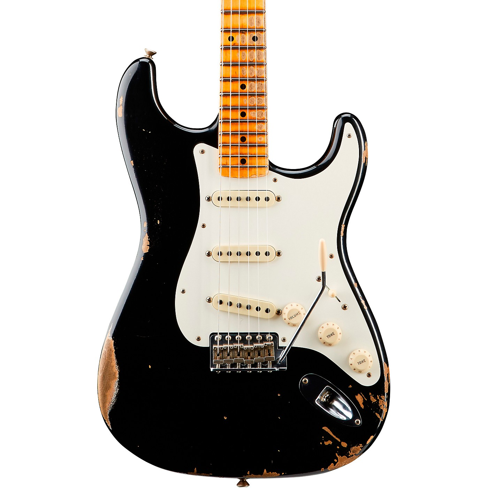

Fender Strat Custom Shop

Truly an iconic piece of musical history dating back to the 1950s, the Fender Stratocaster represents a pivotal moment in electric guitar design. With its sleek contours and versatile tone, the Stratocaster quickly became a favorite among musicians worldwide. Introduced in 1954, the Stratocaster features single-coil pickups that deliver the distinctive "Strat" sound beloved by generations of players. Revered for its playability and unmistakable style, the Stratocaster remains one of the most sought-after instruments in the market. To purchase, simply specify the product name "Fender Stratocaster" and the desired quantity: